Empirical threshold and partition optimization
for binary and multiclass classification
Carlo Domenico Longo de Lemos
Graduate Program in Probability and Statistics, IME-USP
A classifier's output triggers an action, and its two kinds of error rarely cost the same.
A false negative often costs orders of magnitude more than a false positive, and the default rule, which predicts the most probable class, treats them as equal.
Two classes
scikit-learn tunes the threshold $\tau$ on held-out data with TunedThresholdClassifierCV.
Three classes
The rule is a partition of the probability triangle, with no single number to tune, and argmax is the usual choice.
This dissertation asks how to parametrize the multiclass partition and how to learn it from held-out data.
The decision rule is a component to be learned from held-out data.
threshold_opt library, available on PyPI, implements every strategy and the benchmark.Let $(X, Y) \sim \mathbb{P}$, with features $X \in \mathcal{X}$ and label $Y \in \mathcal{Y} = \{0, \dots, K-1\}$. A classifier $h \colon \mathcal{X} \to \mathcal{Y}$ is a composition $h(x) = \delta(\hat{\mathbf{p}}(x))$ of two stages.
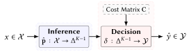
A cost matrix $\mathbf{C} \in \mathbb{R}_{\geq 0}^{K \times K}$ has entry $C_{ij}$ equal to the cost of predicting class $j$ when the true class is $i$. The expected risk of a classifier $h$ is $R(h) = \mathbb{E} \left[ C_{Y, h(X)} \right]$.
At a single input, with $\boldsymbol{\eta}(x) = (\eta_0(x), \dots, \eta_{K-1}(x))$, the conditional risk of predicting $\hat{y}$ is $\mathcal{R}(\hat{y} \mid x) = \sum_k C_{k \hat{y}} \, \eta_k(x) = \mathbf{c}_{\hat{y}}^\top \boldsymbol{\eta}(x)$, with $\mathbf{c}_{\hat{y}}$ the column $\hat{y}$ of $\mathbf{C}$.
The Bayes risk is $R^* = \inf_{h} R(h)$ over measurable classifiers.
The Bayes rule picks the class of smallest conditional risk, with ties to the smallest index: \[ \delta^*(\mathbf{p}) = \arg\min_{\hat{y} \in \mathcal{Y}} \mathbf{c}_{\hat{y}}^\top \mathbf{p} , \] and $h^* = \delta^* \circ \boldsymbol{\eta}$ attains $R^*$ (Proposition 2.3.1; proof: P1).
Let $K = 2$, $\eta = \eta_1$ and $\hat{p} = \hat{p}_1$. For $\tau \in [0, 1]$, the threshold rule $\delta_\tau \colon [0,1] \to \{0,1\}$ is $\delta_\tau(z) = 1$ if $z \geq \tau$ and $\delta_\tau(z) = 0$ if $z < \tau$.
For $K = 2$, the costs are reasonable if $C_{01} > C_{00}$ and $C_{10} > C_{11}$ (Elkan, 2001).
Under reasonable costs, the Bayes classifier $h^*$ is equivalent to $x \mapsto \delta_\tau(\eta(x))$ for a unique $\tau \in [0, 1]$, namely \[ p^* = \frac{C_{01} - C_{00}}{(C_{01} - C_{00}) + (C_{10} - C_{11})} . \]
The analytical rule applies this threshold to the estimate: it predicts $1$ when $\hat{p}(x) \geq p^*$. Under the $0/1$ loss, where every error costs $1$, $p^* = 0.5$ and the analytical rule is argmax.
$C_{ij}$ is the cost of predicting $j$ when the true class is $i$.
The analytical rule is optimal when $\hat{p}(x) = \eta(x)$ almost everywhere. Otherwise, the best threshold on $\hat{p}$ depends on the estimator.
The Bayes rule needs $\boldsymbol{\eta}$, which is unknown. The plug-in classifier (Devroye et al., 1996) applies it to the estimate: $\hat{h}(x) = \delta^*(\hat{\mathbf{p}}(x))$.
With $C_{max} = \max_{i,j} C_{ij}$, \[ \underbrace{R(\hat{h}) - R(h^*)}_{\text{excess risk}} \leq C_{max} \cdot \underbrace{\mathbb{E}_X \left[ \| \hat{\mathbf{p}}(X) - \boldsymbol{\eta}(X) \|_1 \right]}_{\text{estimation error}} . \]
For $K = 2$, an estimator $\hat{p} \colon \mathcal{X} \to [0,1]$ of $\eta_1$ is perfectly calibrated with respect to $\mathbb{P}$ if $\mathbb{P}(Y = 1 \mid \hat{p}(X) = q) = q$ for almost every $q$ under the distribution of $\hat{p}(X)$.
The definition constrains the values of $\hat{p}$ and says nothing about how it ranks instances. The constant $\hat{p}(x) = \mathbb{P}(Y = 1)$ is perfectly calibrated and uninformative, and a classifier can rank correctly and emit distorted values (Guo et al., 2017).
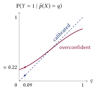
In this schematic, a threshold of $0.09$ on the overconfident estimate selects points of true frequency about $0.22$.
A calibrator is a map $g \colon [0,1] \to [0,1]$ that corrects $\hat{p}$, and calibrate-then-decide predicts $1$ when $g(\hat{p}(x)) \geq p^*$. Platt scaling uses $g(\hat{p}) = \sigma\bigl(a \, \mathrm{logit}(\hat{p}) + b\bigr)$, with $\sigma$ the logistic function.
In practice, $a$ and $b$ are learned from held-out data.
Let $\mathcal{V}$ be drawn i.i.d. from $\mathbb{P}$, independently of the sample used to fit $\hat{\mathbf{p}}$, and let the rules of $\mathcal{H}_{dec}$ be pointwise limits of a countable class of measurable rules. With probability at least $1 - \nu$, for all $\delta \in \mathcal{H}_{dec}$ simultaneously, \[ R(\delta) \leq \hat{R}(\delta) + c \, C_{max} \sqrt{\frac{d_{dec}}{m}} , \] where $d_{dec}$ bounds the capacity of $\mathcal{H}_{dec}$, its VC dimension for $K = 2$ and its Natarajan dimension for $K > 2$ (definitions: B8), and $c$ depends on $m$, $K$ and $1/\nu$ only through logarithms.
The class $\mathcal{H}_{thresh}$ has VC dimension $1$.
In this constructed example, $\hat{p}(X)$ is uniform on $[0, 1]$ and miscalibrated, with $\mathbb{P}(Y = 1 \mid \hat{p}(X) = q) = 0.42 + 0.5 \, q$. The costs are $C_{01} = 4$ and $C_{10} = 2$, so $p^* = 2/3$. The size $8m$ matches the label budget of the $80\%$ pool when a $10\%$ split has $m$ labels. The figure does not model the refitting of cross-validation.
EmpiricalCV splits the training data into $F = 5$ folds. For each fold $k$ the estimator is fitted on the other folds and scored on fold $k$, which gives $\hat{R}_k(\tau)$; the threshold minimizes $\hat{R}_{CV}(\tau) = \frac{1}{F} \sum_k \hat{R}_k(\tau)$, and the estimator is then refitted on all the training data. In scikit-learn it is TunedThresholdClassifierCV.
Datasets. Fourteen from OpenML, $208$ to $48{,}842$ samples; ten seeds.
Classifiers. Ten, default hyperparameters:
Strategies. Twelve, ten untuned and two tuned:
Objectives. Ten, defined on B3 and B15:
The untuned strategies fit the estimator on the whole $80\%$ pool. The calibrated ones and Empirical fit it on $70\%$ and tune on the $10\%$ split. EmpiricalCV tunes on the pool by cross-validation. All are scored on the same $20\%$ test set (B32).
A cell is a (dataset, classifier, objective) triple. In each cell a strategy wins or ties if its mean $\pm 1$ standard error (SE) over the ten seeds overlaps that of the best strategy.
We report the share of cells each strategy wins or ties, with $95\%$ bootstrap intervals over cells. The rule is descriptive (limits: B4).
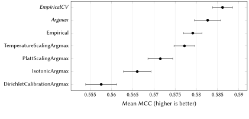
The cell shown is dataset adult, classifier TabM, metric MCC. Italic rows win or tie.
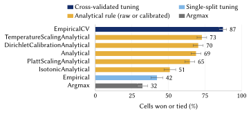
EmpiricalCV wins or ties $87\%$ of the cost cells. Empirical, the same threshold tuned on the $10\%$ validation split, wins or ties $42\%$, below the untuned Analytical at $69\%$. By dataset size, the gap is consistent with overfitting of the $10\%$ split (B25).
The $14$ datasets, $10$ classifiers and $5$ cost matrices give $700$ cost cells, $670$ with results (B1).
$F_\beta$, MCC and G-Mean are not averages of a per-instance cost, so the analytical threshold does not apply and the untuned baseline is Argmax.
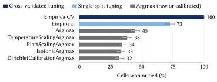
EmpiricalCV wins or ties $99.9\%$ of the $670$ metric cells (the same datasets and classifiers, with the five metrics). Single-split Empirical ($73\%$) is ahead of Argmax ($45\%$).
Share of cost cells won or tied, by base classifier ($\%$):
| LGBM | XGB | Cat | RF | ET | LogReg | NB | TabM | TabPFN | TabICL | |
|---|---|---|---|---|---|---|---|---|---|---|
| Analytical | 76 | 69 | 83 | 76 | 63 | 74 | 19 | 56 | 95 | 88 |
| EmpiricalCV | 89 | 89 | 90 | 87 | 90 | 94 | 57 | 94 | 95 | 88 |
Bootstrap half-widths are $5$ to $12$ points.
On TabPFN and TabICL the analytical threshold wins or ties as many cells as EmpiricalCV and uses no held-out data.
For $K > 2$ the estimate $\hat{\mathbf{p}}(x)$ lies in the simplex $\Delta^{K-1}$, whose vertex $\mathbf{e}_k$ puts probability $1$ on class $k$. A rule $\delta$ splits it into decision regions $\mathcal{P}_i = \delta^{-1}(\{i\})$. The risk of predicting $i$ at $\mathbf{p}$ is \[ \mathcal{L}_i(\mathbf{p}) = \sum_{j} C_{ji} \, p_j = \mathbf{c}_i^\top \mathbf{p} , \qquad \mathcal{R}(i \mid x) = \mathcal{L}_i(\boldsymbol{\eta}(x)) . \] The Bayes rule predicts the class of smallest risk, and its regions are the Bayes regions $\mathcal{P}_i^*$.
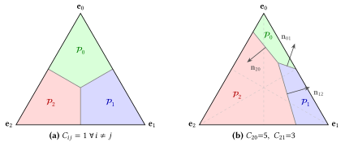
A partition matrix $\mathbf{A}$ takes the place of $\mathbf{C}$ in the Bayes rule (O'Brien et al., 2008): \[ \delta_{\mathbf{A}}(\mathbf{p}) = \arg\min_{i} \sum_j A_{ji} \, p_j . \] It is chosen like the threshold, among $T$ random candidates. Three classes:
A rule used with class-imbalanced data tests the classes in a priority order, rarest first, and predicts the first whose probability reaches its threshold, or the argmax if none does. It is a decision list (Rivest, 1987): \[ \delta_{\mathrm{ord}, \boldsymbol{\tau}}(\mathbf{p}) = \mathrm{ord}(j^*) , \quad j^* = \min \{ j \mid p_{\mathrm{ord}(j)} \geq \tau_{\mathrm{ord}(j)} \} . \]
Its regions are not convex and depend on the order of the tests.
For $K = 3$ under $0/1$ loss, with the argmax boundaries dashed. Multidimensional thresholding keeps every boundary parallel to its argmax position; under probability-ratio thresholding the boundary between two classes is a line through the vertex of the third.
| Method | Rule, one parameter per class | Class |
|---|---|---|
| Parallel shift (O'Brien et al., 2008) | $\arg\min_k \, (\mathbf{c}_k^\top \mathbf{p} + \alpha_k)$ | $\mathcal{H}_{PS}$ |
| Multidimensional thresholding (Legnaro et al., 2025) | $\arg\max_k \, (p_k - \tau_k)$ | $\mathcal{H}_{PS}$ at $0/1$ loss |
| Linear scaling (O'Brien et al., 2008) | $\arg\min_i \sum_k C_{ki} \, \beta_k \, p_k$ | $\mathcal{H}_{Sc}$ |
| Probability-ratio thresholding (Lachiche and Flach, 2003) | $\arg\max_k \, p_k / \tau_k$ | $\mathcal{H}_{Sc}$ at $0/1$ loss |
| Sequential cascade (Rivest, 1987) | first $p_k \geq \tau_k$, by priority | — |
Under $0/1$ loss, probability-ratio thresholding with thresholds $\tau_k > 0$ is equivalent to linear scaling with $\beta_k = 1/\tau_k$, and multidimensional thresholding with $\boldsymbol{\tau} \in \mathbb{R}^K$ to the parallel shift with $\alpha_k = \tau_k$.
Argmax sends each $\mathbf{p}$ to its nearest vertex. A Voronoi rule sends it to the nearest of $K$ prototypes under a distance; this work uses the Euclidean one, $\delta_{\mathcal{M}}(\mathbf{p}) = \arg\min_{k} \| \mathbf{p} - \boldsymbol{\mu}_k \|_2$ (Definition 6; B29).
The prototypes are fitted like the partition matrix, by random search on the validation sample $\mathcal{V}$ (Section 7.4):
A cost matrix is element-wise reasonable if $C_{jj} < C_{ji}$ for every $j$ and all $i \neq j$ (O'Brien et al., 2008). Then the Bayes rule sends each vertex $\mathbf{e}_k$ to class $k$. The dominant label constraint (DLC) requires the same property of the prototypes.
A configuration $\mathcal{M} =(\boldsymbol{\mu}_0, \dots, \boldsymbol{\mu}_{K-1})$ of points of $\Delta^{K-1}$ satisfies the DLC if $\arg\min_{j \in \mathcal{Y}} \|\mathbf{e}_k - \boldsymbol{\mu}_j\|_2 = \{k\}$ for every $k \in \mathcal{Y}$.
The sequential $d^2$ sampler keeps the swap and adds a test against the earlier prototypes. With $d^2$ the squared distance, for $i = 0, \dots, K - 1$:
Every configuration it returns satisfies the DLC (Proposition 7.5.1; P8).
There exist a data distribution $\mathbb{P}$ and a cost matrix $\mathbf{C}$ such that $\inf_{\delta \in \mathcal{H}_{Vor}^{\mathrm{DLC}}} R(\delta) < \inf_{\delta \in \mathcal{H}_{PS}} R(\delta)$.
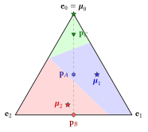
Take $K = 3$, $0/1$ loss, and mass $1/3$ on each of $\mathbf{p}_C = (0.8, 0.1, 0.1)$, $\mathbf{p}_A = (0.4, 0.3, 0.3)$ and $\mathbf{p}_B = (0, 0.5, 0.5)$, with labels $0$, $1$, $2$.
A parallel-shift rule picks the smallest score $s_k(\mathbf{p}) = \mathbf{c}_k^\top \mathbf{p} + \alpha_k$. On the altitude $p_1 = p_2$, $s_1 - s_2$ is the constant $\alpha_1 - \alpha_2$, so no such rule labels $\mathbf{p}_A$ as $1$ and $\mathbf{p}_B$ as $2$, and its risk is at least $1/3$.
The prototypes $\boldsymbol{\mu}_0 = \mathbf{e}_0$, $\boldsymbol{\mu}_1 = (0.4, 0.5, 0.1)$, $\boldsymbol{\mu}_2 = (0.1, 0.4, 0.5)$ satisfy the DLC and classify all three points, with risk $0$.
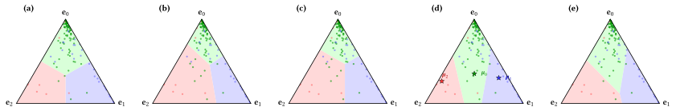
For $K$ classes the bound uses the Natarajan dimension $d_{Nat}$ (Daniely, Sabato, et al., 2015; Natarajan, 1989): $R(\delta) \leq \hat{R}(\delta) + c \, C_{max} \sqrt{d_{Nat}(\mathcal{H}_{dec}) / m}$ (Remark 7.7.1; definition on B8). With prototypes anywhere, the Voronoi rules are exactly the full-matrix rules (Proposition 7.2.1; P6). $\mathcal{H}_{Vor}^{\Delta}$ denotes those with prototypes in the simplex.
\begin{align*} d_{Nat}(\mathcal{H}_{PS}) &= K - 1 , & d_{Nat}(\mathcal{H}_{Sc}) &\leq K - 1 , \\ d_{Nat}(\mathcal{H}_{Vor}) = d_{Nat}(\mathcal{H}_{Full}) &\leq K^2 , & d_{Nat}(\mathcal{H}_{Vor}^{\Delta}) &\leq K^2 . \end{align*}
The parallel-shift value is exact for an admissible $\mathbf{C}$, one where every class is the unique risk minimizer at some point of the simplex (B30); the other values are upper bounds (against $K$: B18).
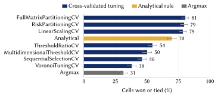
The cross-validated tuners built on the cost matrix lead: FullMatrixPartitioning, RiskPartitioning (the parallel shift) and LinearScaling. The four cross-validated rules that ignore it are below the untuned Analytical ($70\%$). Tuned on the $10\%$ split, the same three reach $30\%$ to $36\%$; with a calibrator, Analytical reaches $31\%$ to $56\%$.
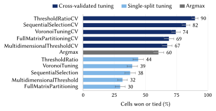
Over the $525$ metric cells with results (of $11 \times 10 \times 5 = 550$), all five cross-validated rules are ahead of Argmax ($60\%$) and all five single-split versions are behind it. The Voronoi and vector-tuned families are compared cell by cell on B17.
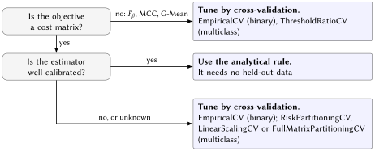
On cost objectives, tuning on a single small split wins or ties fewer cells than the untuned analytical rule in both studies. A larger partition class gave a clear gain only in the scenario built for rotation.
Share of cost cells won or tied:
| Best strategy | Analytical | Lead | |
|---|---|---|---|
| Binary | $87\%$ | $69\%$ | $18$ points |
| Multiclass | $81\%$ | $70\%$ | $11$ points |
The smaller lead may come from multiclass validation data that carry less signal for tuning, or from an analytical rule that loses less to estimation error when $K$ is larger. A synthetic study with an error of controlled size tests the second explanation.
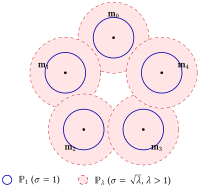
The reference $\mathbb{P}_1$ has $K$ Gaussian classes in $\mathbb{R}^2$, with means on a regular $K$-gon and variance $\sigma^2$ (solid). The data come from $\mathbb{P}_\lambda$, with variance $\lambda \sigma^2$ (dashed).
The Bayes rule $h^*_1$ of $\mathbb{P}_1$ is an analytical rule built on a wrong estimate. Under $\mathbb{P}_\lambda$, with Bayes rule $h^*_\lambda$ and expected risk $R_\lambda$, we measure the relative excess risk for $K$ from $2$ to $20$: \[ \frac{R_\lambda(h^*_1) - R_\lambda(h^*_\lambda)} {R_\lambda(h^*_\lambda)} . \]
With the Asymmetric $10\times$ cost, an error on class $K - 1$ costs $10$ and any other error $1$. Under the $0/1$ loss, scaling the variance does not change the Bayes rule.
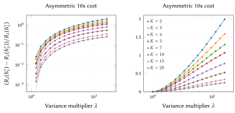
The relative excess risk is highest for $K = 2$ and $7$ to $8$ times lower for $K = 20$; random shifts of the class means give the same ordering, also under the $0/1$ loss. The ratio divides by a Bayes risk that also changes with $K$, since the classes on the $K$-gon get closer as $K$ grows.
A perturbation $\boldsymbol{\epsilon}$ of a probability vector lies in $V = \{\mathbf{v} \in \mathbb{R}^K : \sum_k v_k = 0\}$, of dimension $K - 1$. Away from the boundaries of a rule $\delta$, its per-sample expected cost $\phi_\delta(\mathbf{p}) = \mathbf{c}_{\delta(\mathbf{p})}^\top \mathbf{p}$ is linear near $\mathbf{p}$, with a gradient $\mathbf{g} \in V$, so $\boldsymbol{\epsilon}$ changes it by $\mathbf{g}^\top \boldsymbol{\epsilon}$.
Let $K \geq 2$ and let $\phi \colon \Delta^{K-1} \to \mathbb{R}$ be measurable and differentiable at an interior point $\mathbf{p}$ with gradient $\mathbf{g} \in V$, with $\mathbf{p} + \boldsymbol{\epsilon} \in \Delta^{K-1}$ and $|\phi(\mathbf{p} + \boldsymbol{\epsilon}) - \phi(\mathbf{p}) - \mathbf{g}^\top \boldsymbol{\epsilon}| \leq M \|\boldsymbol{\epsilon}\|^2$ for all $\boldsymbol{\epsilon} \in V$ with $\|\boldsymbol{\epsilon}\| \leq \rho$. If $\boldsymbol{\epsilon}$ is uniform on the sphere $\{\mathbf{v} \in V : \|\mathbf{v}\| = r\}$ with $0 < r \leq \rho$, then \[ \mathbb{E}\bigl[(\phi(\mathbf{p} + \boldsymbol{\epsilon}) - \phi(\mathbf{p}))^2\bigr] = \frac{r^2}{K-1} \, \|\mathbf{g}\|^2 + O(r^3) . \]
The synthetic check reproduces the ordering in $K$ but not the rate $1/(K-1)$; its Gaussian perturbations need not satisfy the assumptions of the lemma.
import numpy as np from sklearn.ensemble import RandomForestClassifier from threshold_opt import metrics, multiclass_strategies as ms C = np.array([[ 0, 1, 1], # C[i, j]: cost of predicting j when the truth is i [10, 0, 1], # missing class 1 costs 10 [ 5, 5, 0]]) model = RandomForestClassifier().fit(X_train, y_train) rule = ms.FullMatrixPartitioningStrategy(model, use_cv=True) # 5-fold CV rule.fit(X_train, y_train, C) for y_pred in (model.predict(X_test), rule.predict(X_test)): # argmax, then tuned print(metrics.calculate_empirical_risk(y_test, y_pred, C))
fit, then predict.The mathematical results of the dissertation are stated and proved in Lean 4 with Mathlib (Appendix E). The Lean kernel checks every proof, and the proofs use only the three standard axioms.
The formalization was generated with AI assistants (Appendix F). No program checks that each formal statement matches the printed one; that match was checked with AI assistance.
Stating the results formally revealed errors in the committee version; the next slide lists them.
No experiment was rerun. Pull requests in the public repository apply the corrections step by step. The final version will rerun the Custom cost for every $K$ and recompute the win rates with one rounding rule.
Limitations
Next steps
We plan to organize some of these into a paper.
Anthony, Martin and Peter L. Bartlett (1999). Neural Network Learning: Theoretical Foundations. Cambridge University Press.
Daniely, Amit, Sivan Sabato, et al. (2015). “Multiclass Learnability and the ERM Principle”. Journal of Machine Learning Research 16, pp. 2377–2404.
Daniely, Amit and Shai Shalev-Shwartz (2014). “Optimal Learners for Multiclass Problems”. In: Proceedings of the 27th Conference on Learning Theory (COLT). Vol. 35. Proceedings of Machine Learning Research, pp. 287–316.
Devroye, Luc et al. (1996). A Probabilistic Theory of Pattern Recognition. Springer.
Elkan, Charles (2001). “The Foundations of Cost-Sensitive Learning”. In: Proceedings of the 17th International Joint Conference on Artificial Intelligence (IJCAI), pp. 973–978.
Gorodkin, Jan (2004). “Comparing Two K-Category Assignments by a K-Category Correlation Coefficient”. Computational Biology and Chemistry 28.5–6, pp. 367–374.
Guo, Chuan et al. (2017). “On Calibration of Modern Neural Networks”. In: Proceedings of the 34th International Conference on Machine Learning (ICML), pp. 1321–1330.
Koyejo, Oluwasanmi et al. (2014). “Consistent Binary Classification with Generalized Performance Metrics”. In: Advances in Neural Information Processing Systems 27 (NeurIPS).
Kull, Meelis et al. (2019). “Beyond Temperature Scaling: Obtaining Well-Calibrated Multi-Class Probabilities with Dirichlet Calibration”. In: Advances in Neural Information Processing Systems 32 (NeurIPS).
Lachiche, Nicolas and Peter A. Flach (2003). “Improving Accuracy and Cost of Two-Class and Multi-Class Probabilistic Classifiers Using ROC Curves”. In: Proceedings of the 20th International Conference on Machine Learning (ICML), pp. 416–423.
Legnaro, Edoardo et al. (2025). “Multiclass Threshold-Based Classification and Model Evaluation”. arXiv preprint arXiv:2511.21794.
Mohri, Mehryar et al. (2018). Foundations of Machine Learning. 2nd. MIT Press.
Natarajan, Balas K. (1989). “On Learning Sets and Functions”. Machine Learning 4.1, pp. 67–97.
O'Brien, Deirdre B. et al. (2008). “Cost-Sensitive Multi-Class Classification from Probability Estimates”. In: Proceedings of the 25th International Conference on Machine Learning (ICML), pp. 712–719.
Platt, John C. (1999). “Probabilistic Outputs for Support Vector Machines and Comparisons to Regularized Likelihood Methods”. In: Advances in Large Margin Classifiers. Ed. by Alexander J. Smola et al. MIT Press, pp. 61–74.
Rivest, Ronald L. (1987). “Learning Decision Lists”. Machine Learning 2.3, pp. 229–246.
Sheng, Victor S. and Charles X. Ling (2006). “Thresholding for Making Classifiers Cost-Sensitive”. In: Proceedings of the 21st National Conference on Artificial Intelligence (AAAI), pp. 476–481.
Zadrozny, Bianca and Charles Elkan (2002). “Transforming Classifier Scores into Accurate Multiclass Probability Estimates”. In: Proceedings of the 8th ACM SIGKDD International Conference on Knowledge Discovery and Data Mining (KDD), pp. 694–699.
| Corrections since the committee version |
| B20 Voronoi, bounds and capacity B21 Ties, calibration and local statements B22 Experiments and interpretation B23 References and stated conditions |
Data. Stratified $80/20$ split into a training pool and a test set; inside the pool, $70\%$ training and $10\%$ validation. Ten seeds resample the partition.
Preprocessing. Imputation, standardization and one-hot encoding are fitted once on the full dataset before splitting. This leaks test-partition feature statistics; the same transformer is shared by every strategy.
Search. A grid of $G = 301$ thresholds in binary. In multiclass, random search over $T = 301$ configurations; single-split RiskPartitioning uses the changepoint solver of O'Brien et al. (2008).
Models. Default hyperparameters. TabPFN and TabICL have no results on adult, bank_marketing, volkert and jannis; TabICL none on sonar, ionosphere and iris.
Binary (left) and multiclass (right). Superscripts are OpenML dataset IDs. Columns: samples, classes (multiclass only), numerical, categorical and encoded features, imbalance ratio.
| Objective | Binary | Multiclass |
|---|---|---|
| Symmetric | the $0/1$ loss | the $0/1$ loss |
| Asymmetric $10\times$, $100\times$ | $C_{01} \in \{10, 100\}$ (false positive), $C_{10} = 1$ | $C_{K-1, j} \in \{10, 100\}$ for $j \neq K - 1$ (errors on the last true class); other errors cost $1$ |
| Non-Zero Diagonal | $\mathbf{C} = \bigl[\begin{smallmatrix} 0.8 & 2.0 \\ 1.0 & 0.5 \end{smallmatrix}\bigr]$ | not used |
| Custom | not used | $K = 3$: $C_{12} = C_{21} = 5$; other errors cost $1$ |
| Ordinal | not used | $C_{ij} = |i - j|$ |
| Quadratic | not used | $C_{ij} = (i - j)^2$ |
| Balanced Error | $C_{01} = 1/(2\pi_0)$, $C_{10} = 1/(2\pi_1)$ | $C_{ij} = 1/(K \pi_i)$ for $i \neq j$ |
$C_{ii} = 0$ except in Non-Zero Diagonal; $\pi_y$ is the training frequency of class $y$. On the eight datasets with $K \neq 3$ the code replaces the Custom matrix by the Asymmetric $10\times$ matrix, which is then counted twice in the cost aggregates.
Within a cell. Mean $\pm 1$ SE over ten seeds; a strategy wins or ties when its interval overlaps that of the best.
Across cells. Share of cells won or tied, with a $95\%$ bootstrap interval that resamples (dataset, model, objective) cells.
The rule gives no per-cell significance level and no correction for multiplicity. The ten seeds resample one dataset, so the standard errors are not those of independent samples, and the bootstrap ignores dependence between cells of one dataset.
A rank-based analysis over datasets, such as a Friedman test with post-hoc comparisons, is the usual alternative and is not in the dissertation.
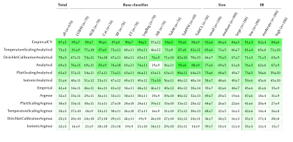
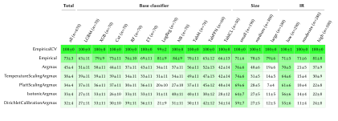
scikit-learn ships TunedThresholdClassifierCV, which chooses the decision threshold of a binary classifier by cross-validation against a user-supplied metric. Up to the grid of candidate thresholds, this is the procedure the binary study calls EmpiricalCV.
The binary study adds a comparison of cross-validated tuning with the analytical threshold, four calibrators and single-split tuning, across ten objectives.
scikit-learn has no counterpart to the multiclass partition classes, their capacity analysis or the benchmark over them.
A set $S = \{x_1, \dots, x_m\}$ is shattered by $\mathcal{H} \subseteq \{0,1\}^{\mathcal{X}}$ if every labeling $(b_1, \dots, b_m) \in \{0,1\}^m$ is realized by some $h \in \mathcal{H}$. $d_{VC}(\mathcal{H})$ is the cardinality of the largest shattered set.
A set is pseudo-shattered by $\mathcal{G} \subseteq \mathbb{R}^{\mathcal{X}}$ if there are witnesses $r_1, \dots, r_m \in \mathbb{R}$ such that for every labeling some $g \in \mathcal{G}$ satisfies $g(x_i) \geq r_i \iff b_i = 1$ for all $i$. $d_P(\mathcal{G})$ is the largest such cardinality.
A set $S$ is shattered by $\mathcal{H} \subseteq \mathcal{Y}^{\mathcal{X}}$ if there are $f_0, f_1 \colon S \to \mathcal{Y}$ with $f_0(x_i) \neq f_1(x_i)$ for all $i$ such that, for every $B \subseteq S$, some $h \in \mathcal{H}$ equals $f_1$ on $B$ and $f_0$ on $S \setminus B$. $d_{Nat}(\mathcal{H})$ is the maximum cardinality of a shattered set.
The empirical risk is piecewise constant in the prototypes, so the search is random.
A configuration $\mathcal{M}$ in the simplex satisfies the DLC if $\arg\min_{j} \|\mathbf{e}_k - \boldsymbol{\mu}_j\|_2 = \{k\}$ for every $k$: on pure-class inputs the Voronoi rule agrees with argmax.
The sequential $d^2$ sampler draws one prototype per class uniformly on the simplex, with its largest coordinate moved to that class, and accepts it only if every earlier vertex stays with its own prototype and the new vertex is nearest to the new one. Its output satisfies the DLC (Proposition 7.5.1; proof: P8).
The search starts at the vertices and keeps strict improvements.
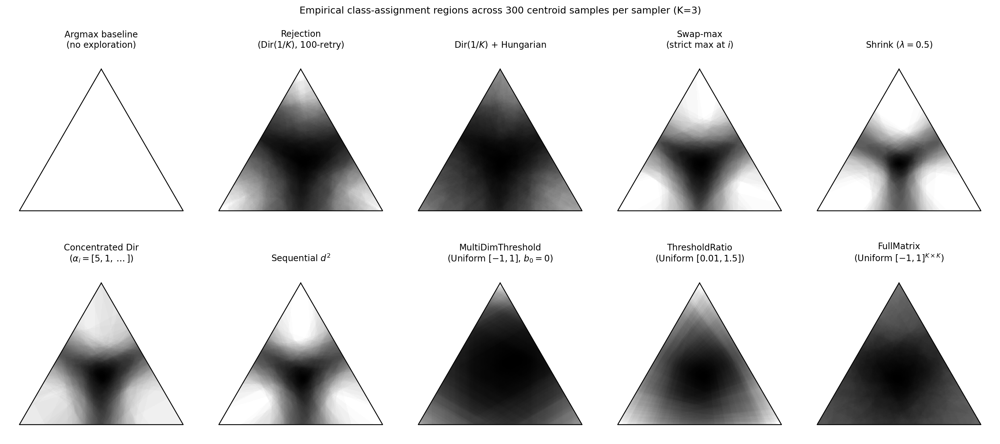
Disagreement across $300$ sampled configurations at $K = 3$; white is unanimous agreement. Sequential $d^2$ is the second panel of the bottom row. Among the six Voronoi samplers it is the only one that keeps the vertices with their own class for every $K$ up to $100$ while still exploring the interior.
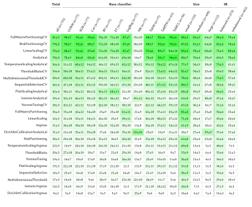
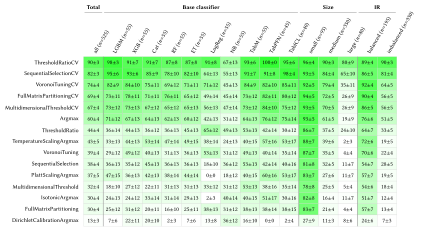
Compute. A Google Cloud n2-highcpu-80 instance for the seven non-neural classifiers and one NVIDIA H200 pod for TabM, TabPFN and TabICL. The merged results hold $136{,}680$ rows for binary and $276{,}960$ for multiclass. Total cloud spend was about USD $140$ and BRL $480$.
AI assistants were used to draft and refactor the library, the experiment harness and the tests; to survey related literature and locate references, which were verified against the sources; to draft and revise prose; to generate and cross-check short derivations; and to propose readings of the results, kept only when the author judged them correct. The Lean formalization of Appendix E was generated by AI assistants; the author's own reading of the formal statements was limited by a basic knowledge of Lean, and their agreement with the printed statements rests on an AI-assisted comparison. The research questions and the theoretical contributions are the author's.
Fitted on the validation split, with the base estimator frozen; $\sigma$ is the logistic sigmoid.
The parametric ones minimize the negative log-likelihood. In multiclass, Platt scaling and isotonic regression are applied one-vs-rest.
Binary. From the counts $\mathrm{TP}$, $\mathrm{FP}$, $\mathrm{FN}$, $\mathrm{TN}$ of the positive class, with $\mathrm{TPR} = \mathrm{TP}/(\mathrm{TP} + \mathrm{FN})$ and $\mathrm{TNR} = \mathrm{TN}/(\mathrm{TN} + \mathrm{FP})$: \begin{gather*} F_\beta = \frac{(1 + \beta^2) \, \mathrm{TP}} {(1 + \beta^2) \, \mathrm{TP} + \beta^2 \, \mathrm{FN} + \mathrm{FP}} , \qquad \text{G-Mean} = \sqrt{\mathrm{TPR} \cdot \mathrm{TNR}} , \\ \mathrm{MCC} = \frac{\mathrm{TP} \cdot \mathrm{TN} - \mathrm{FP} \cdot \mathrm{FN}} {\sqrt{(\mathrm{TP} + \mathrm{FP})(\mathrm{TP} + \mathrm{FN}) (\mathrm{TN} + \mathrm{FP})(\mathrm{TN} + \mathrm{FN})}} . \end{gather*}
Multiclass. Macro $F_\beta$ is the mean over classes of the one-vs-rest $F_\beta$; MCC takes the $K$-class form of Gorodkin (2004). For G-Mean the campaign optimizes geometric_mean_score(average="macro") from imbalanced-learn, which is $\sqrt{\overline{\mathrm{TPR}} \cdot \overline{\mathrm{TNR}}}$ with the one-vs-rest rates averaged over classes, as Section 8.1.3 states. The geometric mean of the recalls, $(\prod_k \mathrm{TPR}_k)^{1/K}$, is the different average="multiclass" variant.
For $K = 3$: with $\boldsymbol{\mu}_1$ and $\boldsymbol{\mu}_2$ fixed, the DLC confines $\boldsymbol{\mu}_0$ to a disc around $\mathbf{e}_0$ minus discs around $\mathbf{e}_1$ and $\mathbf{e}_2$. Outside the shaded area the configuration is still in $\mathcal{H}_{Vor}^{\Delta}$.
For each cell we record which family has a strategy that wins or ties it. Vector-tuned means $\mathcal{H}_{PS}$ and $\mathcal{H}_{Sc}$ rules; Voronoi means VoronoiTuning and its CV variant.
| Winning family | Cost cells | Metric cells |
|---|---|---|
| Vector-tuned alone | $52\%$ | $19\%$ |
| Both | $39\%$ | $74\%$ |
| Voronoi alone | $0.1\%$ | $1.3\%$ |
| Neither | $9\%$ | $5\%$ |
On this benchmark the Voronoi family is rarely the only one to win or tie a cell. On metric cells VoronoiTuningCV wins or ties $74\%$, ahead of the parallel-shift MultidimensionalThresholdCV ($67\%$) and behind ThresholdRatioCV ($90\%$).
The values of the theorem against $K$. Only $d_{Nat}(\mathcal{H}_{PS}) = K - 1$ is exact; the others are upper bounds. The gap term of the bound is $c \, C_{max} \sqrt{d_{Nat} / m}$, so keeping it fixed takes $m$ proportional to $d_{Nat}$: $K^2 / (K - 1)$ times more validation data under the full-matrix bound than for the parallel shift.
Classes $0$ and $1$ have correlations $+0.8$ and $-0.8$ between the first two features; class $2$ has $+0.8$ between the first and the third. Mean $\pm$ standard error over ten seeds:
| Accuracy | Macro-$F_1$ | |
|---|---|---|
| Argmax | $0.852 \pm 0.002$ | $0.699 \pm 0.005$ |
| Ratio thresholding ($\mathcal{H}_{Sc}$) | $0.852 \pm 0.002$ | $0.709 \pm 0.004$ |
| Multidimensional thresholding ($\mathcal{H}_{PS}$) | $0.852 \pm 0.002$ | $0.709 \pm 0.004$ |
| Voronoi rule ($\mathcal{H}_{Vor}^{\mathrm{DLC}}$) | $0.874 \pm 0.002$ | $0.735 \pm 0.006$ |
| Full matrix ($\mathcal{H}_{Full}$) | $0.872 \pm 0.003$ | $0.731 \pm 0.007$ |
The Voronoi rule and the full matrix improve accuracy over argmax by about $2$ points, and the two threshold rules leave it unchanged. The regime was built to favour rotation.
| Where | Committee version | Corrected |
|---|---|---|
| Ch. 7; Thm. 7.7.5; Table 7.2; App. C | $\mathcal{H}_{Vor}$ an intermediate class, $d_{Nat}(\mathcal{H}_{Vor}) \leq K^2 + K$ | With the Euclidean distance, $\mathcal{H}_{Vor} = \mathcal{H}_{Full}$ (new Prop. 7.2.1); $d_{Nat}(\mathcal{H}_{Vor}) = d_{Nat}(\mathcal{H}_{Full}) \leq K^2$ |
| §8.1.4, §8.2.3, Ch. 10 | The fitted Voronoi rule read as the class that contains $\mathcal{H}_{PS}$ | VoronoiTuning searches the DLC subclass, where the containment need not hold |
| Prop. 7.3.2 | Strictness from one $0/1$ witness | $K \geq 2$; strict for every $\mathbf{C}$, at two vertices |
| Prop. 2.6.1; Rem. 7.7.1 | Cor. 3.19 on the cost loss; one rule; a universal constant | $K = 2$; uniform; a countable approximating class; level sets; explicit $c_{bin}$, $c_{Nat}$ |
| Thms. 7.7.2, 7.7.3; Lemma C.0.2 | No hypothesis on $\mathbf{C}$; positivity implicit; a proof that fails on ties | Admissible $\mathbf{C}$; positive weights; a proof that respects the tie rule |
| Where | Committee version | Corrected |
|---|---|---|
| Prop. 3.3.1; Def. 2; §5.3, §5.4 | The rule "coincides" with $h^*$; calibration for all $q$; posterior recovery taken as calibration | Bayes risk attained, agreement off the ties; almost every $q$; posterior recovery sufficient, not necessary |
| §2.3; §5.1; Thm. 5.2.4 | The closed regions form a partition | They cover and overlap on ties; the tie rule gives the partition |
| Ex. 5.2.2; Prop. 5.2.3 | The hedge is optimal "only in the interior" | At no vertex; unique minimizer at $(\tfrac{1}{2}, \tfrac{1}{2}, 0)$, on an edge |
| §6.2.3; Prop. 6.2.4 | "The same class", without the loss or the domain | Under $0/1$ loss; thresholding with $\boldsymbol{\tau} \in \mathbb{R}^K$ |
| Thm. 7.3.1; Fig. A.1; Def. 7; Eq. 7.7; §8.1.4 | A step of the sketch, a caption, DLC "equivalently", $C_{\delta, y}$, weak inequalities | The step fixed, a schematic caption, "in particular", $C_{y, \delta}$, strict inequalities |
| Rem. 7.7.6 | Calibrators "nested"; Platt capacity "linear in $K$" | Parameter counts and per-class bounds |
| Where | Committee version | Corrected |
|---|---|---|
| §8.1.3 | Macro G-Mean $= (\prod_k \mathrm{TPR}_k)^{1/K}$ | As computed, $\sqrt{\overline{\mathrm{TPR}} \cdot \overline{\mathrm{TNR}}}$ |
| §8.1.3 | Custom is a $K = 3$ matrix | For $K \neq 3$, Asymmetric $10\times$, counted twice on eight datasets |
| Chs. 4, 6, 8, 10 | Five seeds; $K - 1$ thresholds; "roughly seven times" | Ten seeds; $K$ thresholds; eight times |
| Ch. 9; App. B | Adjacent means at constant distance; $R_{circ} = \sqrt{2(K-1)/K}\,\sigma$ | $4 \sin(\pi/K)$, shrinking with $K$; $R_{circ} = 2\sigma\sqrt{2(K-1)/K}$ |
| Chs. 9, 10 | The decline read as absolute; dilution derived from the experiments | The relative excess risk falls, and the oracle risk changes with $K$; dilution is a candidate mechanism |
| Lemma 9.2.3; Cor. 9.2.4 | Implicit hypotheses | $K \geq 2$, measurable, a ball in the simplex, one common radius |
No experiment was rerun and no reported empirical result changed.
| Where | Committee version | Corrected |
|---|---|---|
| §6.2.4; Fig. 6.3; Table 7.2 | Cited to arXiv:2505.11276, withdrawn in December 2025 | Its successor (Legnaro et al., 2025), with the same rule $\arg\max_k \, (p_k - \tau_k)$ |
| Introduction; §4.2.3 | $F_\beta$ and MCC have "no closed-form optimal threshold" | For $F_\beta$ it is $F_\beta^*/(1+\beta^2)$, which depends on the distribution through $F_\beta^*$ (Koyejo et al., 2014) |
| §2.2 | $\hat{\mathbf{p}} \to \boldsymbol{\eta}$ from $\boldsymbol{\eta} \in \mathcal{F}$ and $N \to \infty$ | Also uniform convergence of the empirical risk over $\mathcal{F}$ |
| §3.4.2; Ch. 10 | No mention of scikit-learn's tuner; the library as future work | TunedThresholdClassifierCV cited; the library a fifth contribution, with the repository URL |
The temperature, Platt and binary Dirichlet calibrator families, with $W = 1$, $2$ and $3$ free parameters, have pseudo-dimension (definition: B8) at most $1$, $2$ and $3$.
The four calibrators are defined on B14; the multiclass parameter counts are on B8.
Empirical fits the estimator on $70\%$ of the data and tunes the threshold on the $10\%$ validation split. EmpiricalCV fits and tunes by five-fold cross-validation over the $80\%$ pool, eight times the label budget for the threshold.
Mean test loss of Empirical minus that of EmpiricalCV, on Asymmetric $100\times$.
The size pattern is consistent with the label-budget reading; it does not isolate it from other dataset-size confounds.
Given an admissible cost matrix $\mathbf{C}$, the closed Bayes regions $\mathcal{P}_0^*, \dots, \mathcal{P}_{K-1}^*$ are convex polyhedra that cover $\Delta^{K-1}$; they overlap only where risks tie, and assigning each tie to its smallest index gives a partition. The boundary between any two adjacent regions $\mathcal{P}_i^*$ and $\mathcal{P}_j^*$ lies on the hyperplane \[ \mathcal{B}_{ij} = \{ \mathbf{p} \in \mathbb{R}^K \mid (\mathbf{c}_i - \mathbf{c}_j)^\top \mathbf{p} = 0 \} , \] whose normal vector is fixed as $\mathbf{n}_{ij} = \mathbf{c}_i - \mathbf{c}_j$.
The orientation of every boundary is fixed by $\mathbf{C}$ alone. The estimation error $\boldsymbol{\epsilon}(x) = \hat{\mathbf{p}}(x) - \boldsymbol{\eta}(x)$ depends on the estimator and is unconstrained relative to that orientation.
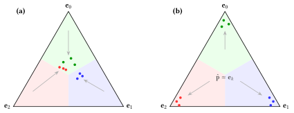
Oversmoothing contracts the estimates to the barycenter: class $2$ can end with zero recall although the boundaries are correct. Overconfidence pushes them to the vertices, where, for element-wise reasonable costs, the plug-in classifier is argmax.
Partition optimization fits the boundaries to the estimates observed on held-out data.
Eleven OpenML datasets with $K$ from $3$ to $10$; the classifiers, protocol and seeds of the binary study.
The squared distance from $\mathbf{p}$ to a vertex is $\|\mathbf{p} - \mathbf{e}_i\|_2^2 = \|\mathbf{p}\|_2^2 - 2 p_i + 1$, so $\arg\min_i \|\mathbf{p} - \mathbf{e}_i\|_2 = \arg\max_i p_i$: argmax assigns each $\mathbf{p}$ to its nearest vertex. The reference points need not be the vertices.
Let $\mathcal{M} = (\boldsymbol{\mu}_0, \dots, \boldsymbol{\mu}_{K-1})$ be $K$ prototypes in $\mathbb{R}^K$, not necessarily distinct. The rule $\delta_{\mathcal{M}} \colon \Delta^{K-1} \to \mathcal{Y}$ is $\delta_{\mathcal{M}}(\mathbf{p}) = \arg\min_{k \in \mathcal{Y}} \| \mathbf{p} - \boldsymbol{\mu}_k \|_2$, with ties broken by the smallest index.
For distinct prototypes, the boundary between classes $i$ and $j$ lies on the perpendicular bisector of $\boldsymbol{\mu}_i$ and $\boldsymbol{\mu}_j$, with normal $\boldsymbol{\mu}_i - \boldsymbol{\mu}_j$. It rotates as the prototypes move, and moving one prototype shifts every boundary of its class. A parallel shift translates the argmax partition with $K - 1$ parameters; prototypes inside the simplex translate and rotate it, with $K(K-1)$ parameters.
$\mathbf{C}$ is admissible if for every class $i$ there is a $\mathbf{p} \in \Delta^{K-1}$ with $\mathbf{c}_i^\top \mathbf{p} < \mathbf{c}_k^\top \mathbf{p}$ for all $k \neq i$. It is element-wise reasonable if $C_{jj} < C_{ji}$ for every $j$ and all $i \neq j$ (O'Brien et al., 2008).
Every element-wise reasonable cost matrix is admissible, and the inclusion is strict for every $K \geq 2$.
$\mathbf{C} = \begin{bmatrix} 0 & 10 & 2 \\ 10 & 0 & 2 \\ 3 & 3 & 5 \end{bmatrix}$
Class $2$ is the unique risk minimizer at $(\tfrac{1}{2}, \tfrac{1}{2}, 0)$ and at no vertex. The matrix is admissible and not element-wise reasonable.
Let $K \geq 2$. For any cost matrix and any parallel-shift rule $\delta(\mathbf{p}) = \arg\min_k (\mathbf{c}_k^\top \mathbf{p} + \alpha_k)$ on $\Delta^{K-1}$, there exist prototypes $\boldsymbol{\mu}_0, \dots, \boldsymbol{\mu}_{K-1} \in \mathbb{R}^K$ whose Voronoi rule induces the same partition. Hence $\mathcal{H}_{PS} \subsetneq \mathcal{H}_{Vor}$.
The prototypes of the proof may lie outside the simplex, so the containment is proved for $\mathcal{H}_{Vor}$ and not for $\mathcal{H}_{Vor}^{\mathrm{DLC}}$, the class the experiments fit.
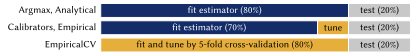
All strategies are scored on the same $20\%$ test set. The untuned ones fit the estimator on the $80\%$ pool; the calibrated ones and Empirical fit it on $70\%$ and tune on the $10\%$ validation split; EmpiricalCV fits and tunes by five-fold cross-validation over the pool.
Each draws a configuration $\boldsymbol{\mu}_0, \dots, \boldsymbol{\mu}_{K-1}$ for the random search (Section 7.5); $\mathrm{Dir}(\boldsymbol{\alpha})$ is the Dirichlet distribution, uniform on the simplex for $\boldsymbol{\alpha} = \mathbf{1}$.
| Sampler | How a configuration is drawn | DLC on every draw |
|---|---|---|
| Rejection | $\boldsymbol{\mu}_k$ i.i.d. $\mathrm{Dir}(\tfrac{1}{K}\mathbf{1})$; kept if each vertex has its own nearest prototype, else redrawn up to $M$ times | when it returns; acceptance tends to $0$ as $K$ grows |
| Hungarian assignment | as rejection, then relabelled by the matching that minimizes $\sum_k d^2(\mathbf{e}_k, \boldsymbol{\mu}_{\pi(k)})$ | no: the matching ignores the per-vertex inequalities |
| Shrink-to-vertex | $\boldsymbol{\mu}_k = (1 - \lambda)\,\mathbf{e}_k + \lambda\,\mathbf{d}_k$, $\mathbf{d}_k \sim \mathrm{Dir}(\mathbf{1})$ | yes for $\lambda < 1/2$, but each $\boldsymbol{\mu}_k$ stays within $\lambda\sqrt{2}$ of $\mathbf{e}_k$ |
| Concentrated Dirichlet | $\boldsymbol{\mu}_i \sim \mathrm{Dir}(\boldsymbol{\alpha}^{(i)})$, $\alpha^{(i)}_i = \beta > 1$, other entries $1$ | no joint condition across prototypes |
| Swap-max | for each $i$, $\mathbf{p} \sim \mathrm{Dir}(\tfrac{1}{K}\mathbf{1})$ with its largest coordinate moved to $i$ | only the per-prototype part |
| Sequential $d^2$ | for each $i$, $\mathbf{p} \sim \mathrm{Dir}(\mathbf{1})$ with its largest coordinate moved to $i$, kept under the two inequalities of the main slide | yes (Proposition 7.5.1), and it covers the interior |
Eleven OpenML datasets, $K$ from $3$ to $10$ (B28), with the classifiers, protocol and seeds of the binary study, and twelve objectives (B3, B15):
Besides Argmax and Analytical, raw or calibrated, seven tuned rules, each tuned on the $10\%$ split and by $5$-fold cross-validation (suffix CV):
| Class | Tuned strategies |
|---|---|
| $\mathcal{H}_{PS}$ | RiskPartitioning (shift of $\mathbf{C}$), MultidimensionalThreshold (shift of argmax) |
| $\mathcal{H}_{Sc}$ | LinearScaling (scaling of $\mathbf{C}$), ThresholdRatio (ratio rule) |
| $\mathcal{H}_{Vor}^{\mathrm{DLC}} \subseteq \mathcal{H}_{Full}$ | VoronoiTuning (prototypes in the simplex, under the DLC) |
| $\mathcal{H}_{Full}$ | FullMatrixPartitioning |
| Cascade | SequentialSelection (class thresholds in sequence, rarest class first) |
Measurability. Each map $x \mapsto \mathcal{R}(\hat{y} \mid x)$ is measurable and $\mathcal{Y}$ is finite, so the level sets \[ \{h^* = k\} = \bigcap_{j > k} \{\mathcal{R}(k \mid x) \leq \mathcal{R}(j \mid x)\} \, \cap \, \bigcap_{j < k} \{\mathcal{R}(k \mid x) < \mathcal{R}(j \mid x)\} \] are finite Boolean combinations of measurable sets: $h^*$ is measurable. Since $0 \leq \mathcal{R}(\hat{y} \mid x) \leq C_{max}$, the risk $R(h)$ is finite for every measurable $h$.
Optimality. For every measurable $h$ and every $x$, $\mathcal{R}(h(x) \mid x) \geq \min_{\hat{y}} \mathcal{R}(\hat{y} \mid x)$. Monotonicity of the integral gives $R(h) \geq \mathbb{E}_X [\min_{\hat{y}} \mathcal{R}(\hat{y} \mid X)]$, and $h^*$ attains the pointwise minimum at every $x$, so the bound is realized at $h^*$. □
Fix $x$ and write $k^* = h^*(x)$, $\hat{k} = \hat{h}(x)$, $\boldsymbol{\eta} = \boldsymbol{\eta}(x)$, $\hat{\mathbf{p}} = \hat{\mathbf{p}}(x)$. Adding and subtracting the estimated risks, the conditional regret is \begin{align*} \Delta\mathcal{R}(x) &= \mathbf{c}_{\hat{k}}^\top \boldsymbol{\eta} - \mathbf{c}_{k^*}^\top \boldsymbol{\eta} \\ &= \mathbf{c}_{\hat{k}}^\top (\boldsymbol{\eta} - \hat{\mathbf{p}}) + \underbrace{\bigl(\mathbf{c}_{\hat{k}}^\top \hat{\mathbf{p}} - \mathbf{c}_{k^*}^\top \hat{\mathbf{p}}\bigr)}_{\leq 0 \text{ by definition of } \hat{k}} + \mathbf{c}_{k^*}^\top (\hat{\mathbf{p}} - \boldsymbol{\eta}) \\ &\leq (\mathbf{c}_{\hat{k}} - \mathbf{c}_{k^*})^\top (\boldsymbol{\eta} - \hat{\mathbf{p}}) \leq \|\mathbf{c}_{\hat{k}} - \mathbf{c}_{k^*}\|_\infty \, \|\boldsymbol{\eta} - \hat{\mathbf{p}}\|_1 , \end{align*} by Hölder's inequality. Since $0 \leq C_{ij} \leq C_{max}$, the first factor is at most $C_{max}$. Taking the expectation over $X$ gives the result. □
If $\hat{k} = k^*$ the regret is zero, whatever the estimation error.
Proposition 2.6.1. Condition on the fitted $\hat{\mathbf{p}}$, which is independent of $\mathcal{V}$. The pairs $(z_i, y_i)$ are then i.i.d. copies of $(Z, Y)$, $Z = \hat{\mathbf{p}}(X)$, and choosing $\delta$ is empirical risk minimization with loss $\ell_\delta(z, y) = C_{y, \delta(z)}$. This is not a $0/1$ loss: it takes at most four values $0 < v_1 < \dots < v_q \leq C_{max}$, so write it with level sets, \[ \ell_\delta(z, y) = \sum_{a=1}^{q} (v_a - v_{a-1}) \, \mathbb{I}\{\ell_\delta(z, y) \geq v_a\} , \qquad v_0 = 0 . \] Each level class has VC dimension at most $d_{dec}$. On the countable subclass, the VC bound of Mohri et al. (2018, Corollary 3.19) holds at each level with probability $1 - \nu/4$; a union bound and the weights $v_a - v_{a-1}$, which sum to at most $C_{max}$, give the rate $C_{max} \cdot 2\sqrt{(d_{dec} \log(2em/d_{dec}) + \log(4/\nu))/m}$. Pointwise approximation extends the bound to all of $\mathcal{H}_{dec}$: the empirical risks agree eventually, and the population risks converge by dominated convergence. □
Lemma 2.6.2. Thresholds on either side of one point give both labels. For $z_1 < z_2$, the labeling $(1, 0)$ would need $z_1 \geq \tau > z_2$, so no two points are shattered. □
Predicting $1$ is optimal exactly when the differential risk $g(\eta) = \mathcal{R}(0 \mid \eta) - \mathcal{R}(1 \mid \eta)$ is non-negative. Expanding, \begin{align*} g(\eta) &= [C_{00}(1 - \eta) + C_{10}\,\eta] - [C_{01}(1 - \eta) + C_{11}\,\eta] \\ &= \eta \underbrace{\bigl[(C_{10} - C_{11}) + (C_{01} - C_{00})\bigr]}_{m} - \underbrace{(C_{01} - C_{00})}_{c} . \end{align*} Under reasonable costs both groups in $m$ are positive, so $m > 0$ and $c > 0$: $g$ is strictly increasing and has the unique root $\tau = c / m$. Since $m = c + (C_{10} - C_{11}) > c$, we get $\tau \in (0, 1)$, and $g(\eta) \geq 0$ if and only if $\eta \geq \tau$.
On the tie set $\{\eta = \tau\}$ both actions attain the minimum conditional risk, so the threshold rule and the smallest-index Bayes rule have the same risk $R^*$. □
Under $0/1$ loss, where every error costs $1$, the risk of predicting class $k$ is $\mathcal{L}_k(\mathbf{p}) = \sum_{j \neq k} p_j = 1 - p_k$.
Proposition 6.2.3 (ratio thresholding is linear scaling). Linear scaling with $\boldsymbol{\beta}$ gives \[ \arg\min_k \sum_{j \neq k} \beta_j \, p_j = \arg\min_k \Bigl( \sum_j \beta_j \, p_j - \beta_k \, p_k \Bigr) = \arg\max_k \, \beta_k \, p_k , \] since the first sum does not depend on $k$. Setting $\beta_k = 1 / \tau_k$ gives $\arg\max_k p_k / \tau_k$. □
Proposition 6.2.4 (multidimensional thresholding is a parallel shift). The parallel-shift rule reduces to $\arg\min_k \, (1 - p_k) + \alpha_k = \arg\max_k \, (p_k - \alpha_k)$, and setting $\alpha_k = \tau_k$ recovers the multidimensional-thresholding rule, for every $\boldsymbol{\tau} \in \mathbb{R}^K$. Both equivalences are exact only under $0/1$ loss. □
Proposition 7.2.1 ($\mathcal{H}_{Vor} = \mathcal{H}_{Full}$). On the simplex $\mathbf{1}^\top \mathbf{p} = 1$, so $\|\mathbf{p} - \boldsymbol{\mu}_k\|_2^2 = \|\mathbf{p}\|_2^2 + (-2 \boldsymbol{\mu}_k + \|\boldsymbol{\mu}_k\|_2^2 \, \mathbf{1})^\top \mathbf{p}$, and $\|\mathbf{p}\|_2^2$ is common to all classes: a Voronoi rule is the full-matrix rule with columns $\mathbf{a}_k = -2 \boldsymbol{\mu}_k + \|\boldsymbol{\mu}_k\|_2^2 \, \mathbf{1}$, ties included. Conversely, given columns $\mathbf{a}_k$, set $\boldsymbol{\mu}_k = -\tfrac{1}{2} \mathbf{a}_k + \beta_k \mathbf{1}$: \[ \|\mathbf{p} - \boldsymbol{\mu}_k\|_2^2 = \|\mathbf{p}\|_2^2 + \mathbf{a}_k^\top \mathbf{p} + \bigl[ K \beta_k^2 - (2 + \mathbf{a}_k^\top \mathbf{1}) \, \beta_k + \tfrac{1}{4} \|\mathbf{a}_k\|_2^2 \bigr] . \] Each bracket is a quadratic in $\beta_k$ with leading coefficient $K > 0$, so all of them can be set to one common value; the two rules then have the same minimizers at every $\mathbf{p}$. □
Proposition 7.3.2. A parallel-shift rule is the full-matrix rule with columns $\mathbf{c}_k + \alpha_k \mathbf{1}$, hence a Voronoi rule. For strictness, write $D_0 = C_{00} - C_{01}$, $D_1 = C_{10} - C_{11}$ and $w = \alpha_0 - \alpha_1$. Labeling $\mathbf{e}_0$ as $0$ and $\mathbf{e}_1$ as $1$ needs $D_0 + w \leq 0 < D_1 + w$, so $D_0 < D_1$; the swapped labeling needs $D_1 < D_0$. A fixed $\mathbf{C}$ allows only one of them, while full-matrix rules, hence Voronoi rules, realize both. □
Lower bound for $\mathcal{H}_{PS}$. With scores $s_k(\mathbf{p}) = \mathbf{c}_k^\top \mathbf{p} + \alpha_k$ and $0/1$ loss, $s_1(\mathbf{p}) - s_2(\mathbf{p}) = (\alpha_1 - \alpha_2) + (p_2 - p_1)$, which is $\alpha_1 - \alpha_2$ on the altitude $p_1 = p_2$. Labeling $\mathbf{p}_A$ as $1$ forces $\alpha_1 \leq \alpha_2$; labeling $\mathbf{p}_B$ as $2$ forces $\alpha_2 \leq \alpha_1$. If both hold, $s_1 \equiv s_2$ on the altitude and the tie is broken the same way at both points. Hence $\inf_{\mathcal{H}_{PS}} R \geq 1/3$.
The Voronoi rule. Squared distances to $(\boldsymbol{\mu}_0, \boldsymbol{\mu}_1, \boldsymbol{\mu}_2)$:
| Point | $\boldsymbol{\mu}_0$ | $\boldsymbol{\mu}_1$ | $\boldsymbol{\mu}_2$ | Vertex | $\boldsymbol{\mu}_0$ | $\boldsymbol{\mu}_1$ | $\boldsymbol{\mu}_2$ |
|---|---|---|---|---|---|---|---|
| $\mathbf{p}_C$ (label $0$) | $\mathbf{0.06}$ | $0.32$ | $0.74$ | $\mathbf{e}_0$ | $\mathbf{0}$ | $0.62$ | $1.22$ |
| $\mathbf{p}_A$ (label $1$) | $0.54$ | $\mathbf{0.08}$ | $0.14$ | $\mathbf{e}_1$ | $2$ | $\mathbf{0.42}$ | $0.62$ |
| $\mathbf{p}_B$ (label $2$) | $1.50$ | $0.32$ | $\mathbf{0.02}$ | $\mathbf{e}_2$ | $2$ | $1.22$ | $\mathbf{0.42}$ |
Each point is nearest to the prototype of its label (risk $0$) and each vertex to its own (DLC). □
Write $d^2(\mathbf{a}, \mathbf{b}) = \|\mathbf{a} - \mathbf{b}\|_2^2$. The sampler draws $\boldsymbol{\mu}_0, \dots, \boldsymbol{\mu}_{K-1}$ in turn. A candidate $\mathbf{p}$ for $\boldsymbol{\mu}_i$ is accepted when, for every $k < i$, \[ d^2(\mathbf{e}_k, \mathbf{p}) > d^2(\mathbf{e}_k, \boldsymbol{\mu}_k) \quad \text{and} \quad d^2(\mathbf{e}_i, \mathbf{p}) < d^2(\mathbf{e}_i, \boldsymbol{\mu}_k) . \]
Invariant. After step $i$, for every $k \leq i$, $\arg\min_{j \leq i} d^2(\mathbf{e}_k, \boldsymbol{\mu}_j) = \{k\}$.
Induction. For $i = 0$ the argmin is over a single prototype. Assume the invariant after step $i - 1$. The first inequality says the new prototype is farther from $\mathbf{e}_k$ than $\boldsymbol{\mu}_k$ is, for every $k < i$, so the argmin at $\mathbf{e}_k$ is unchanged. The second says $\boldsymbol{\mu}_i$ is strictly nearer to $\mathbf{e}_i$ than every earlier prototype, which is the invariant at $k = i$. At $i = K - 1$ the invariant is the DLC. □
Let $\mathcal{H} = \{ \mathbf{p} \mapsto \arg\min_k s_k(\mathbf{p}; w) : w \in \mathbb{R}^W \}$ with $s_k(\mathbf{p}; w) = w^\top \Phi_k(\mathbf{p}) + g_k(\mathbf{p})$, where $\Phi_k$ and $g_k$ are fixed. Then $d_{Nat}(\mathcal{H}) \leq W$.
Idea. Let $C$ be shattered (Definition 8) with $f_0, f_1$, and put $\boldsymbol{\rho} = \Phi_{f_0} - \Phi_{f_1}$, $h = g_{f_0} - g_{f_1}$ at each point, so the score gap is $s_{f_0} - s_{f_1} = w^\top \boldsymbol{\rho} + h$. If $|C| > W$, the vectors $\boldsymbol{\rho}(\mathbf{p})$ are linearly dependent: $\sum_{\mathbf{p}} c_{\mathbf{p}} \boldsymbol{\rho}(\mathbf{p}) = \mathbf{0}$ with some $c_{\mathbf{p}} \neq 0$, so the weighted sum of score gaps is the same number for every $w$. The labeling that selects $f_0$ where $c_{\mathbf{p}} > 0$ and $f_1$ where $c_{\mathbf{p}} < 0$ makes every summand $\leq 0$, the opposite labeling makes every summand $\geq 0$, so each summand with $c_{\mathbf{p}} \neq 0$ is a tie in both. The smallest-index rule cannot break one tie in two ways, hence $|C| \leq W$. With $g_k \equiv 0$ this is the bound of Daniely and Shalev-Shwartz (2014, Theorem 7).
Applications. $\mathcal{H}_{Sc}$: scores linear in $\beta_1, \dots, \beta_{K-1}$ with $g_i = C_{0i} \, p_0$, so $W = K - 1$. $\mathcal{H}_{Full}$: $W = K^2$. Voronoi: the score $2 \boldsymbol{\mu}_k^\top \mathbf{p} - \|\boldsymbol{\mu}_k\|_2^2$ is affine in the lifted pair $(2 \boldsymbol{\mu}_k, -\|\boldsymbol{\mu}_k\|_2^2)$, of dimension $K^2 + K$, or $K(K-1) + K = K^2$ on the simplex; with Proposition 7.2.1, $d_{Nat}(\mathcal{H}_{Vor}) = d_{Nat}(\mathcal{H}_{Full}) \leq K^2$. □
Upper bound. With the gauge $\sum_k \alpha_k = 0$, the scores $\mathbf{c}_k^\top \mathbf{p} + \alpha_k$ are affine in $K - 1$ free offsets, with $\mathbf{c}_k^\top \mathbf{p}$ a parameter-free term. Lemma C.0.2 gives $d_{Nat} \leq K - 1$.
Lower bound. For an admissible $\mathbf{C}$ the Bayes regions are full-dimensional polytopes tiling the simplex, so their facet-adjacency graph is connected. Fix a spanning tree $T$, with $K - 1$ edges. For each edge $\{i, j\}$ take an interior point $\mathbf{p}_e$ so close to the shared facet that $|\mathbf{c}_i^\top \mathbf{p}_e - \mathbf{c}_j^\top \mathbf{p}_e| < \gamma / (4K)$, where $\gamma > 0$ is the margin of every third class at these points. Let $S$ be the set of these $K - 1$ points and let $f_0, f_1$ pick the two endpoints of each edge.
Given $B \subseteq S$, root $T$ and assign offsets along it, changing by $\pm \gamma / (2K)$ across each edge with the sign that selects the wanted endpoint. A tree has no cycle, so the assignment is consistent, and $\|\boldsymbol{\alpha}\|_\infty < \gamma / 2$ keeps every third class excluded. All $2^{K-1}$ subsets are realized. □
Choose an orthonormal basis $\mathbf{b}_1, \dots, \mathbf{b}_{K-1}$ of $V$ and write $\boldsymbol{\epsilon} = \sum_k Z_k \mathbf{b}_k$. Then $(Z_1, \dots, Z_{K-1})$ is uniform on the sphere of radius $r$ in $\mathbb{R}^{K-1}$. That distribution is invariant under coordinate permutations and sign flips, so $\mathbb{E}[Z_k Z_l] = 0$ for $k \neq l$ and $\mathbb{E}[Z_k^2]$ does not depend on $k$. With $\sum_k Z_k^2 = r^2$, this gives $\mathbb{E}[Z_k^2] = r^2 / (K - 1)$.
Since $\mathbf{g} \in V$, \[ \mathbb{E}\bigl[(\mathbf{g}^\top \boldsymbol{\epsilon})^2\bigr] = \sum_k (\mathbf{g}^\top \mathbf{b}_k)^2 \, \mathbb{E}[Z_k^2] = \frac{r^2}{K - 1} \, \|\mathbf{g}\|^2 . \]
By the smoothness assumption, $\phi(\mathbf{p} + \boldsymbol{\epsilon}) - \phi(\mathbf{p}) = \mathbf{g}^\top \boldsymbol{\epsilon} + \mathrm{rem}$ with $|\mathrm{rem}| \leq M r^2$. Squaring, the cross term is at most $\|\mathbf{g}\| \, r \cdot M r^2 = O(r^3)$ by Cauchy-Schwarz, and the squared remainder is at most $M^2 r^4$. □